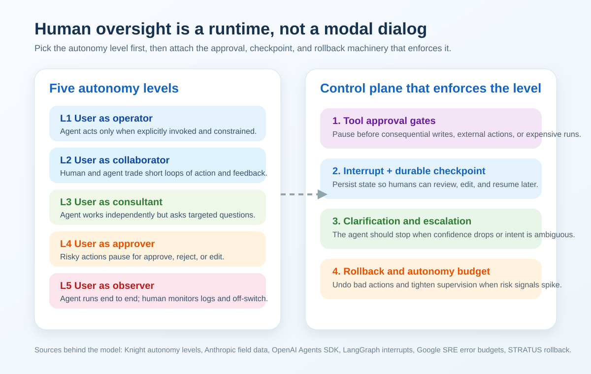

Human-in-the-Loop for AI Agents in 2026: Autonomy Levels, Approval Gates, and Rollback
Teams still talk about human-in-the-loop like it is a yes-or-no feature. Does the agent ask for approval before sending the email? Does a human review the purchase order? That framing misses the real design decision.
The real question is how much authority the agent gets, and under what conditions that authority narrows, pauses, or gets revoked. Human oversight is not a screen in front of the model. It is part of the runtime.
TL;DR: Pick the autonomy level first, then build the runtime that enforces it. In practice that means approval hooks, interrupt-and-resume state, durable checkpoints, and a rollback path when the agent takes the wrong branch.

Start with autonomy, not approvals
The best framing I found came from the Knight First Amendment Institute's work on levels of autonomy for AI agents. Instead of asking whether an agent is "autonomous" in the abstract, the paper breaks autonomy into five levels, from user as operator to user as observer. At the high end, the user can only monitor logs and hit an emergency stop. At the low end, the user remains in direct control of each action.[^knight]
That distinction matters because capability and authority are different things. You might have a model that can draft a customer refund, issue a command in production, or update a database row. That does not tell you whether it should do any of those things without review.
I think this is where a lot of agent designs go wrong. Teams argue about model quality when the harder question is policy. Should this system act as a collaborator, an approver-seeking consultant, or a mostly autonomous operator with an off-switch? If you do not answer that first, you end up bolting approval prompts onto a system that has no coherent authority model.
Real oversight is not "approve every step"
Anthropic's February 18, 2026 study is useful because it looks at deployed behavior, not a toy workflow. They analyzed millions of interactions across Claude Code and Anthropic API traffic and found something counterintuitive: as users gained experience, they both auto-approved more often and interrupted more often.[^anthropic]
The numbers are specific enough to matter:
- Among newer Claude Code users, roughly 20% of sessions used full auto-approve.
- By around 750 sessions, that rose to over 40%.
- Human interrupt rates also rose, from about 5% of turns for newer users to around 9% for more experienced users.
That is not less oversight. It is a different kind of oversight.
Beginners supervise every action because they do not trust the system yet. Experienced users stop reviewing every command, but they keep watching the session and step in when the trajectory looks wrong. Anthropic also found that, on the most complex tasks, Claude Code asked for clarification more than twice as often as humans interrupted it.[^anthropic] Good autonomy is not silence. Good autonomy includes the agent knowing when to stop.
This is why I no longer like the phrase "human-in-the-loop" when people use it to mean a single approval dialog. Real oversight has at least four modes:
- Pre-action approval for risky operations.
- Mid-run interruption when the human wants to redirect the agent.
- Agent-initiated clarification when confidence drops or instructions conflict.
- Post-action audit and rollback when something should be undone.
If your system only has the first one, you do not have an oversight architecture. You have a confirmation button.
The runtime primitives that make HITL real
The good news is that the 2026 agent stack has converged on concrete runtime primitives for this.
OpenAI's Agents SDK exposes approval as part of tool execution, not as an afterthought. In the Python SDK, needs_approval can be attached to function_tool, Agent.as_tool, ShellTool, and ApplyPatchTool, with either unconditional approval or a per-call predicate.[^openai-hitl] That is the right shape. Approval belongs next to the action boundary.
Right before the code:
from agents import Agent, function_tool
@function_tool(needs_approval=True)
async def cancel_order(order_id: int) -> str:
return f"Cancelled order {order_id}"
agent = Agent(
name="Support agent",
instructions="Handle tickets and ask for approval when needed.",
tools=[cancel_order],
)
LangGraph pushes the same idea from the runtime side. Its interrupt() primitive pauses graph execution, persists state through a checkpointer, and waits for a resume command.[^langgraph] The docs are explicit that production usage needs a durable checkpointer and a stable thread ID. That is the difference between a demo and a system a human can actually rejoin later.
Right before the code:
from langgraph.types import interrupt
def approval_node(state):
approved = interrupt("Do you approve this action?")
return {"approved": approved}
The pattern matters more than the framework. The runtime needs to be able to:
- stop before a consequential action,
- surface the pending action in a reviewable form,
- persist enough state to resume later,
- accept approval, rejection, or edits,
- continue from the exact suspended point.
That is the implementation of an autonomy level. Without it, "human oversight" is just product copy.
Approval is not enough without rollback
There is another failure mode that approval-heavy designs ignore: the agent was allowed to act, acted plausibly, and still made the system worse.
That is why I think rollback belongs in the same conversation as approvals. The STRATUS paper on autonomous reliability engineering is a good example. The authors formalize a safety property they call Transactional No-Regression (TNR) and then build the system around that constraint.[^stratus] Even from the abstract, the point is clear: autonomy gets much safer when the system can explore and iterate without leaving the world in a worse state.
You do not need to be building an SRE agent to borrow the lesson. Any agent that writes to external state should have one of these patterns:
- atomic write boundaries,
- compensating actions,
- an intention queue reviewed before commit,
- a draft mode before irreversible execution,
- shadow mode before full autonomy.
The mistake is assuming that better approval UX solves this. It does not. A human can approve the wrong thing. The runtime still needs a way back.
Borrow the SRE idea: autonomy budgets
Google's SRE book defines an error budget as the acceptable level of failure implied by an SLO. If the budget is spent, launches stop until the system is back within limits.[^sre]
I think agent teams should adapt that idea into an autonomy budget.
This is my term, not a standard one from the sources. The idea is simple: decide how much unsupervised action your agent is allowed before it must tighten controls.
For example:
- If tool-call retries spike, stop auto-approval.
- If the agent exceeds a cost threshold, require review for the next external action.
- If plan revisions keep growing without forward progress, force clarification.
- If post-hoc audit defects exceed a weekly threshold, drop the system from observer mode to approver mode.
That gives you a policy loop that is operational, not philosophical. It also avoids the all-or-nothing trap where teams flip from "approve everything" to "let it run" with no middle state.
A practical architecture for production agents
If I were designing this today, I would separate the system into four layers:
1. Autonomy policy
Define the level explicitly. Is the agent a collaborator, an approver-seeking consultant, or a near-autonomous operator with an emergency stop?
2. Action classification
Mark actions by risk:
- read-only,
- reversible writes,
- expensive writes,
- irreversible writes,
- regulated or externally visible actions.
3. Runtime control
Implement the mechanics:
- tool-level approvals,
- interrupts and resume,
- durable checkpoints,
- timeouts,
- clarification prompts,
- human takeover.
OpenAI's April 15, 2026 Agents SDK update is relevant here because it pushes the stack in this direction: harness + sandbox + controlled execution layer, not just "call a model and hope for the best."[^openai-runtime]
4. Recovery
Assume a wrong action will eventually pass through. Build:
- rollback,
- compensation,
- audit logs,
- shadow runs,
- autonomy-budget downgrades.
This is less glamorous than talking about fully autonomous agents. It is also much closer to how useful systems survive contact with production.
Key Takeaways
- Human-in-the-loop is an architecture choice, not a checkbox. The first decision is the agent's autonomy level, not whether a prompt appears before a tool call.
- Experienced users do not remove oversight; they change its shape. Anthropic's February 18, 2026 data shows more auto-approval and more interruption at the same time.
- Runtime primitives are the real implementation of oversight. Approval hooks, interrupts, durable checkpoints, and resume semantics matter more than slogans about safety.
- Rollback belongs in the design from day one. Approval alone cannot prevent regression once the agent has authority to act.
- Autonomy should be governed like reliability. An autonomy-budget model is a practical way to tighten or loosen control based on observed behavior.
References
- Anthropic: Measuring AI agent autonomy in practice (February 18, 2026)
- Knight First Amendment Institute: Levels of Autonomy for AI Agents
- OpenAI Agents SDK: Human-in-the-loop
- OpenAI: The next evolution of the Agents SDK (April 15, 2026)
- LangGraph docs: Interrupts
- Google SRE book: Production Services Best Practices
- STRATUS: A Multi-agent System for Autonomous Reliability Engineering of Modern Clouds
[^anthropic]: Anthropic, "Measuring AI agent autonomy in practice," published February 18, 2026. [^knight]: Knight First Amendment Institute, "Levels of Autonomy for AI Agents." [^openai-hitl]: OpenAI Agents SDK docs, "Human-in-the-loop." [^langgraph]: LangGraph docs, "Interrupts." [^sre]: Google SRE book, "Production Services Best Practices." [^stratus]: Chen et al., "STRATUS: A Multi-agent System for Autonomous Reliability Engineering of Modern Clouds." arXiv:2506.02009, revised March 19, 2026. [^openai-runtime]: OpenAI, "The next evolution of the Agents SDK," published April 15, 2026.